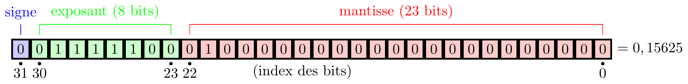

from sys import getsizeof
n1 = 2**32
n2 = 2**128
print(getsizeof(n1), getsizeof(n2))32 44Lorsque nous voulons représenter des nombres dans un ordinateur, il faut distinguer deux cas biens différents; la représentation des nombres entiers et la représentation des nombres fractionnaires.
En Python, contrairement à la plupart des langages informatiques, les entiers sont représentés avec une précision infinie. C’est-à-dire que la seule limite correspond à la mémoire interne de la machine que vous utilisez. Cependant, dans la majorité des langages informatiques, la précision de la représentation des entiers est finie, c’est-à-dire qu’un certain nombre de bits est alloué en mémoire pous stocker votre nombre et vous ne pouvez pas le dépasser.
Nous pouvons connaître le nombre de bits utilisés par Python dans la représentation d’un entier en utilisant la fonction getsizeof du module sys.
from sys import getsizeof
n1 = 2**32
n2 = 2**128
print(getsizeof(n1), getsizeof(n2))32 44Pour étudier le comportement d’entiers ayant une taille fixe, on peut utiliser le module numpy. Ce module possède plusieurs classes d’entiers à taille fixe.
Définition 2.1 (Entiers non signés (nombres positifs)) Un nombre entier non signé (positif) est représenté par un nombre de bits préalablement fixé. Au besoin, on complète le nombre par des zéros à gauche fin d’avoir le nombre total de bits choisi.
Python
numpy.ubyte: entier non signé sur 8 bitsnumpy.ushort: entier non signé sur 16 bitsnumpy.uintc: entier non signé sur 32 bitsnumpy.uint: entier non signé sur 64 bitsExemple 2.1 Transformez les entiers décimaux suivants en entiers non signés sur un octet (huit bits).
import numpy as np
print(bin(np.ubyte(143)), bin(np.ubyte(15)), bin(np.ubyte(30)))0b10001111 0b1111 0b11110Si on tente d’écrire un nombre entier qui dépasse la capacité du format, nous n’obtenons pas nécessairement un message d’erreur, il faut donc être très prudents. Par exemple, le format numpy.byte peut représenter les entiers de 0 à 255. Si nous tentons de représenter 256, nous obtenons:
import numpy as np
print(np.uint8(256))0Ce genre d’erreur est appelée un dépassement d’entier. Un dépassement d’entier (integer overflow) est, en informatique, une condition qui se produit lorsqu’une opération mathématique produit une valeur numérique supérieure à celle représentable dans l’espace de stockage disponible. Par exemple, l’ajout d’une unité au plus grand nombre pouvant être représenté entraîne un dépassement d’entier.
Le dépassement d’entier le plus célèbre de ces dernières années est très probablement celui qui causa la destruction de la fusée Ariane 5, lors de son vol inaugural, le 4 juin 1996.
Exemple 2.2 Quel est le plus grand entier non signé pouvant être représenté avec:
Pour travailler avec des entiers qui peuvent être positifs ou négatifs, il faut inclure le signe du nombre dans sa représentation, et l’on parle alors d’entiers signés.
Définition 2.2 (Entiers signés (représentation signe et module)) Un nombre entier signé (généralement représenté dans un octet) est un nombre où le 1er bit (à gauche) est réservé au signe, et les autres bits permettent d’indiquer la valeur absolue du nombre. Pour indiquer qu’un nombre est positif (+), le 1er bit est 0, et pour un nombre négatif (-), le 1er bit est 1.
Python
numpy.byte: entier signé sur 8 bitsnumpy.short: entier signé sur 16 bitsnumpy.intc: entier signé sur 32 bitsnumpy.int_: entier signé sur 64 bitsExemple 2.3 Complétez les tableaux suivants qui indiquent la représentation signe et module sur 4 bits.
| Base 2 | Base 10 |
|---|---|
| 0000 | |
| 0001 | |
| 0010 | |
| 0011 | |
| 0100 | |
| 0101 | |
| 0110 | |
| 0111 |
| Base 2 | Base 10 |
|---|---|
| 1000 | |
| 1001 | |
| 1010 | |
| 1011 | |
| 1100 | |
| 1101 | |
| 1110 | |
| 1111 |
En utilisant les nombres entiers signés:
Exemple 2.4 Quelles sont les valeurs extrèmes pour des entiers signés représentés sur 4 bits?
Exemple 2.5 Écrivez la représentation signe et module sur 8 bits de:


La virgule flottante est une méthode d’écriture de nombres fréquemment utilisée dans les ordinateurs, équivalente à la notation scientifique en numération binaire.
Par exemple: \[ +13,254 = \underbrace{+}_{\text{signe}} \underbrace{0,13254}_{\text{mantisse}} \times 10^{\overbrace{{2}}^{\text{exposant}}} \]
Un nombre flottant est formé de trois éléments : la mantisse, l’exposant et le signe. Le bit de poids fort est le bit de signe : si ce bit est à 1, le nombre est négatif, et s’il est à 0, le nombre est positif. Les \(e\) bits suivants représentent l’exposant biaisé (sauf valeur spéciale), et les \(m\) bits suivants (\(m\) bits de poids faible) représentent la mantisse.
| Signe | Exposant biaisé | Mantisse |
|---|---|---|
| (1 bit) | (e bits) | (m bits) |

Nous reviendrons sur l’exposant biaisé à la section Section 2.3.
Pour simplifier la présentation et la compréhension, nous utiliserons la base décimale avec 7 chiffres de précision, tout comme le format binary32 (format à simple précision), que nous verrons plus tard. Les principes fondamentaux sont les mêmes peu importe la base et le nombre de chiffres de précision. Nous utiliserons \(f\) pour désigner la mantisse (en anglais on parle de float) et \(e\) pour désigner l’exposant.
Pour additionner (ou soustraire) des nombres en virgule flottante, nous devons les représenter avec le même exposant. La convention est de modifier l’exposant le plus petit pour le rendre égal à l’exposant le plus grand.
\[ \begin{array}{rrll} & e=5; & s=1,234567 & (123456,7) \\ + & e=2; & s=1,017654 & (101,7654) \\ \\ \hline \\ & e=5; & s=1,234567 & \\ + & e=5; & s=0,01017654 & (\text{après déplacement de la virgule}) \\ \\ \hline \\ & e=5; & s=1,235584654 & (\text{somme réelle}: 123558,4654) \end{array} \]
Le résultat précédent correspond à la somme réelle des deux nombres. Le résultat sera ensuite arrondi à 7 chiffres et normalisé si nécessaire. Le résultat final est:
\[ \begin{array}{rrll} & e=5; & s=1,235585 & (\text{somme finale}: 123558,5) \end{array} \]
Les trois derniers chiffres du second nombre (654) sont essentiellement perdus. C’est ce que nous appelons l’erreur d’arrondi. Dans des cas extrèmes, la somme de deux nombres différents de zéro peut être égale à un de ces nombre.
Exemple 2.6 Additionnez les deux nombres 123456,7 et 0,009876543, en utilisant 7 chiffres pour la mantisse.
Dans l’exemple précédent, il semblerait qu’un grand nombre de chiffres supplémentaires soit nécessaire pour s’assurer d’obtenir le bon résultat. En pratique, pour l’addition ou la soustraction en binaire, en utilisant une bonne implémentation, seulement un guard bit, un rounding bit et un sticky bit sont nécessaires pour obtenir un bon résultat.
Un autre problème peut se produire lorsque des approximations de deux nombres presque égaux sont soustraites.
Exemple 2.7 Effectuez la soustraction de 123457,1467 et 123456,659, en utilisant 7 chiffres pour la mantisse.
Exemple 2.8 Calculez l’erreur relative faite à l’Exemple 2.7.
L’annulation catastrophique de l’Exemple 2.7 illustre le danger de supposer que tous les chiffres d’un résultat sont pertinents.
Exemple 2.9 Soit deux nombres \(x\) et \(y\). La manière naïve de calculer la fonction \(x^2-y^2\) en virgule flottante est sujette à l’annulation catastrophique, lorsque \(x\) et \(y\) sont proches. En effet, la soustraction peut faire apparaître les erreurs d’arrondi dans l’élévation au carré. La fonction factorisée \((x+y)(x-y)\) évite l’annulation catastrophique car elle évite d’introduire des erreurs d’arrondis avant la soustraction.
x = 1+2**(-29)
y = 1+2**(-30)
ds1 = x**2-y**2
ds2 = (x+y)*(x-y)
err = abs(ds1-ds2)/ds2
print(ds1, ds2, err)1.862645149230957e-09 1.8626451518330422e-09 1.3969838599716539e-09Contrairement à l’addition et la soustraction, il n’y a pas de problème d’annulation catastrophique pour la multiplication ou la division.
Pour multiplier, les mantisses sont multipliées et les exposants sont additionnés. Le résultat est ensuite arrondi et normalisé. Pour diviser, les mantisses sont divisées et les exposants sont soustraits. Le résultat est ensuite arrondi et normalisé.
Exemple 2.10 Effectuez la multiplication de 4734,612 et 541724,2, en utilisant 7 chiffres pour la mantisse.
En informatique, l’IEEE 754 est une norme sur l’arithmétique à virgule flottante mise au point par le Institute of Electrical and Electronics Engineers. Elle est la norme la plus employée actuellement pour le calcul des nombres à virgule flottante avec les CPU et les FPU. La norme définit les formats de représentation des nombres à virgule flottante (signe, mantisse, exposant, nombres dénormalisés) et valeurs spéciales (infinis et NaN), en même temps qu’un ensemble d’opérations sur les nombres flottants. Il décrit aussi cinq modes d’arrondi et cinq exceptions (comprenant les conditions dans lesquelles une exception se produit, et ce qui se passe dans ce cas).
L’exposant peut être positif ou négatif. Cependant, la représentation habituelle des nombres signés (complément à 2) rendrait la comparaison entre les nombres flottants un peu plus difficile. Pour régler ce problème, l’exposant est biaisé, afin de le stocker sous forme d’un nombre non signé. Le terme biaisé signifie que l’exposant est stocké sous forme d’entier positif, mais pour trouver l’exposant réel, il faut soustraire une valeur (le biais) à celle stockée.
Ce biais est de \(2^{e-1}-1\) (\(e\) représente le nombre de bits de l’exposant) ; il s’agit donc d’une valeur constante une fois que le nombre de bits \(e\) est fixé.
Par exemple, dans le cas où l’exposant est composé de 8 bits, nous avons \(e=8\) et le biais est de \(2^{8-1}-1=127\).
L’interprétation d’un nombre (autre qu’infini) est donc : valeur = signe x 2(exposant−biais) x mantisse avec:
Le bit de poids fort de la mantisse est déterminé par la valeur de l’exposant biaisé. Si l’exposant biaisé est différent de 0 et de \(2^e-1\), le bit de poids fort de la mantisse est 1, et le nombre est dit normalisé. Si l’exposant biaisé est nul, le bit de poids fort de la mantisse est nul, et le nombre est dénormalisé.
Il y a trois cas particuliers:
Un nombre flottant normalisé a une valeur \(v\) donnée par la formule suivante: \[ v = s \times 2^e \times (1+f) \]
Les nombres dénormalisés suivent le même principe, sauf qu’une seule valeur de \(e\) est possible, \(e=2-2^{e-1}\). Nous avons donc \[ v = s \times 2^e \times (0+f) \]
La mantisse est représentée par: \[ \begin{aligned} f &= \sum_{i=1}^{m} b_i 2^{-i}, \qquad b_i \in \{0, 1 \} \\ &= b_1 2^{-1}+b_2 2^{-2}+\ldots + b_m 2^{-m} \end{aligned} \tag{2.1}\] pour un entier fixé \(m\), la taille de la mantisse. L’équation (Équation 2.1) représente des nombres dans l’intervalle \([1,2[\). De manière équivalente, nous pouvons écrire \[ \begin{aligned} f &= 2^{-m} \sum_{i=1}^{m} b_i 2^{m-i} = 2^{-m} z, \qquad b_i \in \{0, 1 \} \end{aligned} \tag{2.2}\] pour un entier \(z\) dans l’ensemble \(\{ 0, 1, \ldots, 2^m-1 \}\).
Exemple 2.11 Écrivez toutes les mantisses possibles si le nombre de bits de la mantisse est de 1, c’est-à-dire \(m=1\).
Exemple 2.12 Écrivez toutes les mantisses possibles si le nombre de bits de la mantisse est de 2, c’est-à-dire \(m=2\).
L’expression \(f = \sum_{i=1}^{m} b_i 2^{-i}\) peut être calculée facilement lorsque tous les \(b_i=1\). Nous obtenons: \[ f = \sum_{i=1}^{m} 1 \cdot 2^{-i} = 2-2^{-m} \]
Définition 2.3 (L’epsilon d’une machine) L’epsilon d’une machine est défini comme le plus petit nombre qui, ajouté à un, donne un résultat différent de un.
En utilisant l’équation (Équation 2.2), nous remarquons que le plus petit nombre (autre que 0) possible est \(2^{-m}\).
Pour déterminer l’epsilon de la machine en Python, on utilise la commande sys.float_info.epsilon du module sys.
import sys
sys.float_info.epsilon2.220446049250313e-16Nous pouvons aussi utiliser un petit programme pour déterminer l’epsilon de la machine.
eps = 1.0
while eps + 1 > 1:
eps /= 2
eps *= 2
print("L'epsilon machine est:", eps)L'epsilon machine est: 2.220446049250313e-16En clair, si nous additionnons un nombre plus petit que l’epsilon machine, le résultat reste inchangé.
import sys
eps = sys.float_info.epsilon
print(1+eps, 1+eps/2)1.0000000000000002 1.0Le standard IEEE 754 spécifie un format à précision simple comme:
L’exposant est un entier non signé de 8 bits de 0 à 255 sous la forme biaisée, c’est-à-dire que pour obtenir l’exposant réel, nous devons lui soustraire 127. Les exposants peuvent prendre les valeurs entières de -126 à +127 car les exposants -127 (seulement des zéros) et +128 (seulement des uns) sont réservés pour des nombres spéciaux.

La valeur est donc donnée par:
\[ (-1)^{b_{31}}\times 2^{(b_{30}b_{29}\ldots b_{23})_2-127}\times (1,b_{22}b_{21}\ldots b_0)_2 \] ce qui donne \[ \text{valeur}=(-1)^{\text{signe}}\times 2^{(E-127)}\times \left( 1+ \sum_{i=1}^{23} b_{23-i} 2^{-i}\right) \]
Dans l’exemple précédent, nous avons:
L’exposant du format à virgule flottante à précision simple est encodé de manière biaisée, avec un biais de 127 (\(2^{e-1}-1=2^{8-1}-1\)).
Pour obtenir l’exposant véritable, on doit soustraire 127 à l’exposant stocké.
Les exposants 0016 et FF16 ont une interprétation spéciale.
| Exposant | Fraction = 0 | Fraction \(\neq\) 0 | Équation |
|---|---|---|---|
| 0016 | \(\pm\) zéro | nombre dénormalisé | \((-1)^{\text{signe}}\times 2^{-126}\times 0,\text{fraction}\) |
| 0116,…,FE16 | valeur normale | valeur normale | \((-1)^{\text{signe}}\times 2^{\text{exposant}-127}\times 1,\text{fraction}\) |
| FF16 | \(\pm\) infini | NaN |
Pour les exemples suivants, trouvez la représentation sous forme binaire et hexadécimale.
Exemple 2.13 Trouvez le plus petit nombre dénormalisé positif.
Exemple 2.14 Trouvez le plus grand nombre dénormalisé positif.
Exemple 2.15 Trouvez le plus petit nombre normalisé positif.
Exemple 2.16 Trouvez le plus grand nombre normalisé positif.
Exemple 2.17 Trouvez le plus grand nombre plus petit que un.